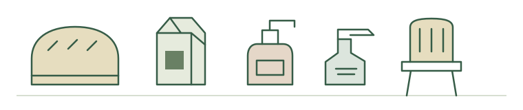
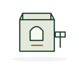

From the food we eat to the furniture we use, Australian production plays very different roles. Follow the products, the places and the choices behind “made here”.
Everyday essentials, illustrated

Food · Personal care · Things for the home
Production · Products · Places · PeopleAll four chapters available · Two further maps in development
01
The supply picture · FY2023–24
Made Here or Imported?
A product category can have a large local output, a high local share, or both. Those are different stories.
Reading the numbers
These are 18 selected ABS product categories, not individual brands or certified products. “Local production share” means Australian Production ÷ Supply BP. Total supply includes goods for intermediate use, consumption, investment, inventories and exports. It is not the share of retail purchases that are Australian-made.
Figure 01 / Compare the values
Two sources of supply. Very different scales.
Compare the dollar value of local production with imports. Clothing excluding knitted or crocheted items stands apart: imports are A$17,577 million, compared with A$991 million in Australian production.
Green circle: Australian ProductionOrange square: Imports
A$ million · FY2023–24 · Ordered by total supply · The value scale adjusts to the selected group.
Loading verified ABS data…
Hover or tap a mark for the exact IOPC category and values. Labels are abbreviated for readability (* flags important exclusions or combined items). Full IOPC classifications are in the data table below.
What this showsThe gap measures a difference in supply values. It does not measure the number of products, jobs or purchases.
Size is only part of the picture. Local production accounts for 98.1% of supply value for cultured milk products, but 3.2% for the combined laundry and dishwashing appliance category.
All 18 selected categories · FY2023–24 · Dashed line: equal production and import values (50%).
Loading verified ABS data…
Cultured milk products includes sour cream, yoghurt and other cultured milk products. The appliance category includes washing machines, drying cabinets, tumble driers and dishwashing machines.
What this showsThe balance between local production and imports varies by category. A high share is not evidence of high retail demand or a fully domestic supply chain.
Now set imports aside. Rectangle area shows Australian Production value within this curated set. Bread and rolls, chocolate confectionery, and cheese and curd occupy the largest areas.
Selected production total18 categories · A$ million · FY2023–24
Largest production values in this selection
Loading verified ABS data…
Colour key · Editorial product groups
Area = Australian Production value. Colours identify research groups, not an official ABS hierarchy.
Select a rectangle or choose a category to read its full name and production value. Small rectangles are still included.
What this showsArea describes the composition of this selected set only. It is not a breakdown of all Australian manufacturing, GDP or local retail sales. Colours are editorial research groups, not an official ABS hierarchy.
Original English descriptions are retained. Abbreviated chart labels do not redefine the statistical categories. “nec” means not elsewhere classified; “excl” means excluding. Values: A$ million; share: Australian Production / Supply BP.
Australian Production is valued at basic prices; Imports are c.i.f. Supply BP follows the workbook’s definition. Categories may include commercial as well as household uses. No ABS category identifies an Australian Made certified product.
02
The products / Eight documented examples
Meet Australian-made Products
Behind a category are things people use—and different kinds of evidence about where they are made.
Examples, not a census
These selected products appear in the official Australian Made directory. They illustrate dairy processing, skincare, textiles and household goods; they do not represent the whole market. Directory evidence and manufacturing-location evidence are separate. No ABS production value is assigned to a brand.
Original illustrations show product types, not exact product images, packaging or certification logos.
Milk powderP01

Illustrative icon
Clare Valley Dairy
Clare Valley Dairy Skim Milk Powder 1 kg
Location unverified
Product-to-factory link unverified
The documented company factory is not linked to this product.
Evidence & scope for Clare Valley Dairy Skim Milk Powder 1 kg
ANMA documents a factory in Melbourne’s west, but the evidence does not link this 1 kg product to that facility. Clare Valley in the name is not manufacturing-location evidence.
Export-directory listing; the stages of milk sourcing, powder production, blending and packing have not been located.
Certification evidence: official Australian Made directory listing. This does not certify every product sold by the brand.
Australian milk is an ingredient claim; the manufacturing place is unverified.
Evidence & scope for Ozi Choice Milky Bites
The brand documents this dairy-based snack line. Australian milk describes an ingredient origin; the manufacturing state and facility have not been verified.
Evidence is for the named product line, not every flavour or individual SKU.
Certification evidence: official Australian Made directory listing. This does not certify every product sold by the brand.
Made and packaged in WA, according to the skincare-range FAQ.
Evidence & scope for Manuka & Pawpaw Hand & Body Cream
Clean & Pure’s FAQ states that its skincare is manufactured and packaged in Western Australia. This cream is part of that skincare range; no city or factory is assigned.
The product is named in the AMCL licensee’s product list. Its individual directory page timed out during the audit.
Certification evidence: official Australian Made directory listing. This does not certify every product sold by the brand.
Yandina is documented for the manufacturer’s mattresses and bases.
Evidence & scope for The Indulgence Collection Double-sided Mattress
The Mattress Company’s FAQ identifies Yandina on the Sunshine Coast as the manufacturing location for its mattresses and bases.
The directory lists the Indulgence Collection; evidence covers a collection with multiple configurations, not a single certified SKU. Components may be imported.
Certification evidence: official Australian Made directory listing. This does not certify every product sold by the brand.
Official sources name Sydney and Queensland; this set’s location is unresolved.
Evidence & scope for AUS-ION Iron Workhorse Frypan Set
The product listing says “Made in Sydney”, while an AMCL article dated 27 January 2026 describes Solidteknics cookware manufacturing in Queensland. The evidence does not resolve the location for this set.
No state or city is assigned. This set is excluded from geographical outputs until the conflict is resolved.
Certification evidence: official Australian Made directory listing. This does not certify every product sold by the brand.
What these examples reveal“Made in Australia” does not always tell us which town or factory made an item. Product-specific evidence, range-level statements and unresolved locations must remain distinguishable. These cards are qualitative examples, not statistical charts or a location map.
Source: Australian Made Campaign directory and the manufacturer sources linked on each card. Existing research accessed 12 October 2026; live certification status has not been rechecked for this build. Full audited product records ↗
03
The places / State of Origin · 2025
From Australia to the World
The export story has a geography. Start with one familiar group of processed products: dairy.
Map 01 / Processed dairy exports
Victoria stands out in processed dairy exports.
Victoria records A$2,282.2 million in exports of this group in 2025, followed by New South Wales at A$414.8 million. These are state-attributed trade values, not counts of products or factories.
TRIEC 1213 — Dairy products processed · Calendar year 2025 · Nominal A$ million, FOB · Linear colour scale
Loading verified DFAT exports and ABS boundaries…
Grey: no record, not a confirmed zero (ACT).
Hover or tap a state for its value. Use this selector for keyboard access and the small ACT area.
Colour encodes total recorded export value, not value per person or per square kilometre. Large land areas do not imply larger exports. Borders are simplified for display; remote offshore islands are omitted, but their state totals are not reduced.
What this showsRecorded exports of processed dairy are concentrated in Victoria, with New South Wales and Tasmania next. This describes the geography of one processed export group—not all Australian-made products, local retail supply or Australian Made certification.
Read all eight state / territory values
TRIEC 1213 · 2025 · Exact recorded values in A$ (FOB)
State of Origin is where goods were wholly produced, or where the final stage of production or manufacture occurred. It is not necessarily the loading port and is not a factory location. Imports and A$74.1 million of re-exports are excluded. All destination labels are included in state totals. Confidential origins are never allocated to states; these state tables cannot establish complete national totals.
Next in this chapter: destination proportional-symbol and origin–destination flow maps. These two map idioms are still under development.
04
The choices / Consumer attitudes
Why Buy Australian Made?
Origin can be a powerful signal. What people associate with it—and what they say they would pay—are different questions.
March 2025 survey / Stated preferences, not sales
84%
more likely to buy when they know a product is made in Australia.
72%
willing to pay more for Australian-made products.
67%
intend to buy more Australian-made products in the next 12 months from the survey.
Three different questions; percentages must not be added. Roy Morgan, commissioned by AMCL; published 23 May 2025. Population described as “Australians”; sample size, age coverage and exact item bases not disclosed in the public material. Question descriptions here are paraphrases, not the original questionnaire. 2025 findings ↗ · 2025 infographic / fieldwork date ↗
Figure 04 / The meaning of the logo
A signal of jobs, safety and quality.
Local jobsSafetyQuality
In the report indexed as 2022, 97% associated the Australian Made logo with local jobs. These are perceived attributes of the logo—not evidence that products perform better, or that 97% bought a product to support jobs.
2022 report label · Independent attribute percentages · Not a time series
What this showsThe logo carries associations beyond national origin. Several attributes can apply at once, so these percentages do not form parts of a whole.
Read the exact published values
2022 report · perceived logo attributes
Response category
Respondents (%)
Local jobs
97%
Safe
94%
High quality
94%
Reliable
93%
Ethical labour
90%
Good value
85%
Sustainable
80%
Eco friendly
80%
Clean & green
77%
Source: Roy Morgan, The power of the Australian Made logo, p. 2 ↗. The official research index supplies the 2022 label; fieldwork date, exact publication date, sample size and full question wording are not reported. Population is described as Australians; the precise item denominator is unavailable. Question paraphrase: “Which attributes do consumers associate with the Australian Made logo?”
The largest published response band in the 2023 report is 6–10% more (31%). Another 17% were not willing to pay more, and 9% were unsure. These responses do not establish the premium paid at checkout.
2023 report label · Orange stems and dots: respondents in each published response category
Published percentages sum to 99.4%. Values are retained without normalisation; no extra category is invented. The public infographic does not resolve the shortfall. “Over 50% more” abbreviates the original “More than 50% more”.
What this showsA general willingness to pay more conceals different price limits and uncertainty. This is historical stated willingness—not an estimate of average premiums or a trend against the differently worded 2025 findings.
Read the exact published values
2023 report · stated willingness to pay
Response category
Respondents (%)
Up to 5% more
25%
6–10% more
31%
11–20% more
12%
21–30% more
3%
31–50% more
1.4%
More than 50% more
1%
Not willing to pay more
17%
Not sure
9%
Source: Roy Morgan, Aussies want more Australian Made, p. 1 ↗. 2023 is the report label; fieldwork and exact publication dates are unavailable. Sample size, respondent age range, exact item base and original questionnaire are not supplied. Percentages refer to respondents described as Australians, not only those willing to pay more. Question paraphrase: “What price premium would consumers be willing to pay for Australian-made products?”
Chapter 1 describes the value of production and imports. These surveys describe people’s attitudes. They cannot be joined to establish that a category’s local supply share causes a preference or reflects retail availability. The 2025 infographic discusses availability, unclear origin and cost-of-living pressure, but supplies no comparable percentages for ranking those barriers. Preference alone cannot explain a product category’s supply structure.
Only published aggregates are available here; there are no respondent-level data or uncertainty estimates. All source records were accessed in the existing audit on 12 October 2026. Historical audit records ↗ · Recent audit records ↗. Historical report labels are not verified fieldwork years.